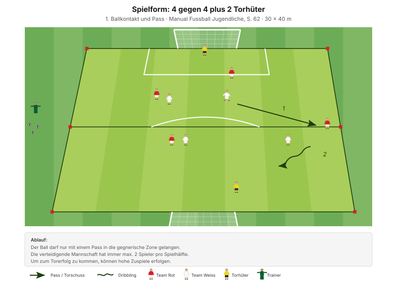
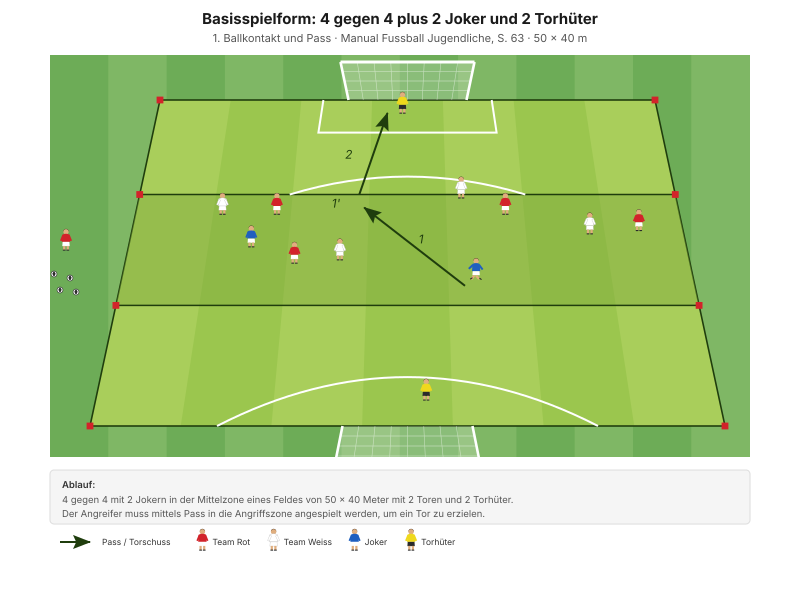

Tagesregel: "Von hinten rausspielen." Mit dem ersten Ballkontakt den Passweg öffnen und den Ball kontrolliert nach vorne bringen – statt ihn wegzuschlagen.
"Die Spieler öffnen mit dem 1. Ballkontakt den Passweg und spielen einen präzisen und scharfen Pass zum Mitspieler." Ziel "1. Ballkontakt und Pass", Manual Fussball Jugendliche, S. 62
Der Gegnerdruck steigt Stufe um Stufe, die Überzahl im Aufbau schrumpft:
Die stärkste Regel des Abends ist die Zonenregel in H1: Sie erzeugt im Aufbau dauerhaft eine Überzahl von 5 gegen 2. Der lange Ball wird dadurch nicht verboten, sondern schlicht unattraktiv – die Junioren spielen flach, weil es die bessere Lösung ist, nicht weil der Trainer es befiehlt.
| Zeit | Min | Teil | Inhalt |
|---|---|---|---|
| 0–4 | 4 | Besammlung | Tagesregel "Von hinten rausspielen", Gruppen einteilen |
| 4–16 | 12 | E1 | Passspiel von Seite zu Seite · Big 4 zwischen den Wiederholungen |
| 16–22 | 6 | E2 | Vom 2 gegen 2 zum 3 gegen 3 |
| 22–30 | 8 | E3 | Sprint mit Startschritten und Slalom (Explosivität) |
| 30–45 | 15 | H1 | 5 gegen 5 plus 2 Torhüter · max. 2 Verteidiger pro Hälfte |
| 45–48 | 3 | Pause | Trinken, Mittelzone für die Joker markieren |
| 48–70 | 22 | H2 | 4 gegen 4 plus 2 Joker und 2 Torhüter |
| 70–82 | 12 | Abschluss | Freies Spiel 5 gegen 5 plus 2 Torhüter |
| 82–90 | 8 | Ausklang | Cool-down, zwei Entwicklungsfragen, Verabschiedung |
| Total | 90 |
Einstieg 26 · Hauptteil 37 · Abschluss 20 Min. – nach dem Trainingsschema des Manuals (S. 43).
Nur einmal umbauen: Das grosse Feld steht von Anfang an mit Mittellinie. Die beiden Einstiegsfelder liegen darin. In der Pause kommt nur die Mittelzone für die Joker dazu.
"Leg genügend Bälle bereit, damit keine Pausen entstehen." Manual Fussball Jugendliche, S. 77
12 Minuten · 2 Felder à 20 × 18 m · je 6 Spieler · alle 12 aktiv
3 Wiederholungen à 1'30''–2' – zwischen den Wiederholungen je zwei Präventionsübungen.
"Mit dem 1. Ballkontakt die Folgeaktion (Pass) vorbereiten – flache, scharfe Pässe" SFV-Lernbaustein "Einstieg TE: 1. Ballkontakt und Pass", Phase 1
Den Bezug zum Spiel laut sagen: "Von einer Seite auf die andere" ist nichts anderes als der Seitenwechsel im Aufbau – nur ohne Gegner und ohne Tor. Dann verstehen sie ab der ersten Minute, wozu die Form gut ist.
Je zwei Übungen zwischen den Wiederholungen, 25 Sekunden pro Übung:
| Bereich | Übung | Worauf achten |
|---|---|---|
| Fussgelenk | Einbeinsprünge seitlich | Bei der Landung knickt das Knie weder nach innen noch nach aussen. Oberkörper leicht nach vorne, Blick nach vorne. |
| Knie | Miniband Side Steps | Miniband immer unter Spannung halten. |
| Hüfte | Dead Bug | Kinn zur Brust ziehen, damit der Rücken flach und immer in Kontakt mit dem Boden bleibt. |
| Hamstrings | Leg Curl mit Miniband | Knie bleiben hüftbreit, Standbein leicht gebeugt. |
"Arbeit mit Zeitvorgaben – nicht mit Anzahl Wiederholungen." Prinzip Körperstabilität, Manual Fussball Jugendliche, S. 75
Zwei Punkte pro Übung nennen, nicht mehr. Qualität vor Tempo.
6 Minuten · gleiche Felder, kein Umbau · 3 Wiederholungen à 1'30''–2'
Dieselben Felder – jetzt mit Gegner.
"Mit dem 1. Ballkontakt die Folgeaktion (Pass) vorbereiten – flache, scharfe Pässe" SFV-Lernbaustein "Einstieg TE: 1. Ballkontakt und Pass", Phase 2
Warum das zum Thema passt: Der Aussenspieler kommt erst nach drei Pässen ins Spiel – die Junioren müssen also erst halten, bevor sie öffnen können. Das ist Geduld im Aufbau, in klein.
8 Minuten · 2 Bahnen · zwei Teams im Wettkampf
"Optisches Startsignal verwenden" SFV-Lernbaustein "Einstieg TE: 1. Ballkontakt und Pass", Phase 3
Das optische Startsignal (Arm heben, Ball fallen lassen) ist kein Detail: Es zwingt die Spieler, hinzuschauen statt zu horchen – und trainiert nebenbei die Informationsaufnahme, die im Aufbau den Unterschied macht.
| Parameter | Vorgabe |
|---|---|
| Distanz | 15–30 m |
| Wiederholungen | 3 |
| Pause zwischen Wiederholungen | 1/15 (Belastung × 15) |
| Serien | 3 |
| Pause zwischen Serien | 1'30''–2' |
"Erholungszeit: 10- bis 20-fache Dauer der Belastungszeit, abhängig von der Laufdistanz. Vollständig erholen zwischen den Wiederholungen." Prinzipien Explosivität, Manual Fussball Jugendliche, S. 72
15 Minuten · 40 × 30 m · alle 12 Spieler
Manual-Vorlage · Diagramm 17 «4 gegen 4 plus 2 Torhüter» (S. 62)

Die Vorlage: 4 gegen 4 auf 30 × 40 m, max. 2 Verteidiger pro Spielhälfte.
So steht es heute · 5 gegen 5 plus 2 Torhüter auf 40 × 30 m
"Der Ball darf nur mit einem Pass in die gegnerische Zone gelangen. Die verteidigende Mannschaft hat immer max. 2 Spieler pro Spielhälfte." Spielform, Manual Fussball Jugendliche, S. 62
Die Zonenregel macht den Aufbau zur einfachsten Option auf dem Platz. Wer den Ball hinten hat, steht in einer Überzahl von 5 gegen 2 – da muss niemand mehr überredet werden, flach zu spielen. Und weil der Ball nur per Pass nach vorne kommt, ist der Dribbling-Alleingang ausgeschlossen, ohne dass man ihn verbieten muss.
Ausdrücklich sagen: Der Rückpass zum Torhüter ist keine Niederlage, sondern eine Lösung. Sonst trauen sie sich nicht.
22 Minuten · 45 × 30 m · alle 12 Spieler
Manual-Vorlage · Diagramm 18 «4 gegen 4 plus 2 Joker und 2 Torhüter» (S. 63)

4 + 4 + 2 Joker + 2 Torhüter = genau 12. Diese Form passt ohne jede Anpassung auf den Kader.
"4 gegen 4 mit 2 Jokern in der Mittelzone eines Feldes mit 2 Toren und 2 Torhütern. Der Angreifer muss mittels Pass in die Angriffszone angespielt werden, um ein Tor zu erzielen." Basisspielform, Manual Fussball Jugendliche, S. 63
"Die Basisspielform eignet sich besonders gut, um die Prinzipien sichtbar zu machen und zu beobachten." Manual Fussball Jugendliche, S. 57
Alles vom Einstieg kommt hier zusammen: Die Joker in der Mittelzone sind die Aussenspieler aus E1 und E2 – nur jetzt im richtigen Spiel und in der Mitte statt an der Seite. Und die Regel "der Angreifer muss angespielt werden" ist dieselbe Idee wie die Passregel aus H1, eine Stufe schwerer.
12 Minuten · gleiches Feld, Mittelzone weg
Keine Auflagen, keine Aufbau-Pflicht, kein Bonus. Das ist Absicht. Der Wert dieses Trainings zeigt sich genau hier: Bauen sie von selbst auf, wenn niemand es mehr verlangt?
8 Minuten · Cool-down im Gehen, dann Kreis in der Mitte
Zuerst 3–4 Minuten lockeres Auslaufen und Mobilität, dann der Kreis. Zwei Fragen – die Antworten kommen von den Spielern:
"Sind deine Pässe optimal dosiert und präzise angekommen? Wenn nein, warum nicht? Was kannst du tun, damit es dir gelingt?"
"Hat dir der 1. Ballkontakt jeweils einen Passweg geöffnet? Wenn nein, warum nicht?" Entwicklungsfragen "1. Ballkontakt und Pass", Manual Fussball Jugendliche, S. 62
Zum Schluss: Die Tagesregel wiederholen lassen – "Von hinten rausspielen. Der Torhüter ist unser erster Aufbauspieler. Wenn's eng wird: zurück und neu."
Material aufräumen – Teamarbeit, nicht Strafe.
| Teil | Vorlage | Seite |
|---|---|---|
| E1 – E3 | SFV-Lernbaustein "Einstieg TE: 1. Ballkontakt und Pass", Phasen 1–3 | – |
| H1 | Spielform "4 gegen 4 plus 2 Torhüter", Pass in die gegnerische Zone (Diagramm 17) | 62 |
| H2 | Basisspielform "4 gegen 4 plus 2 Joker und 2 Torhüter" (Diagramm 18) | 63 |
| Ziele, Coaching, Entwicklungsfragen | Kapitelkopf "1. Ballkontakt und Pass" | 62 |
| Taktische Prinzipien | Kapitelkopf "Wir haben den Ball" | 57 |
| Explosivität, Körperstabilität | Athletik und Gesundheit | 72, 75 |
| Trainingsaufbau | Trainingsschema (Abb. 19) | 43–45 |
Alle Seitenangaben beziehen sich auf das J+S Manual Fussball Jugendliche (BASPO/SFV, 2022). Spielerzahlen und Feldmasse sind auf einen Kader von 12 Spielern angepasst. Die Diagramme zu H1 und H2 sind Nachzeichnungen der Illustrationen aus dem Manual. Dieser Trainingsplan wurde mit Unterstützung von KI (Claude, Anthropic) erstellt.